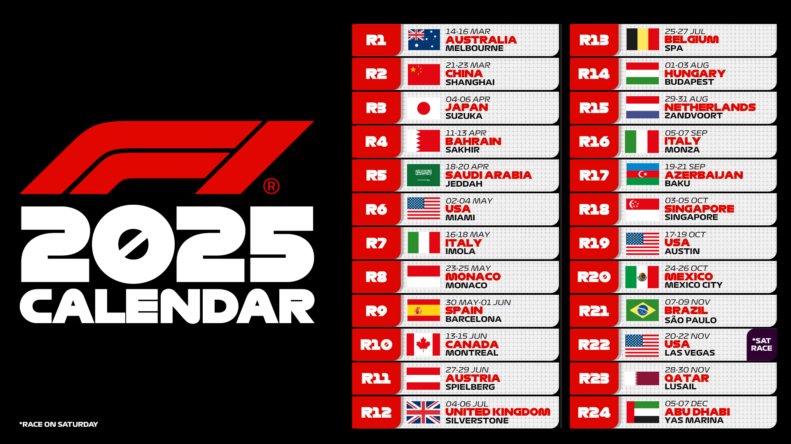
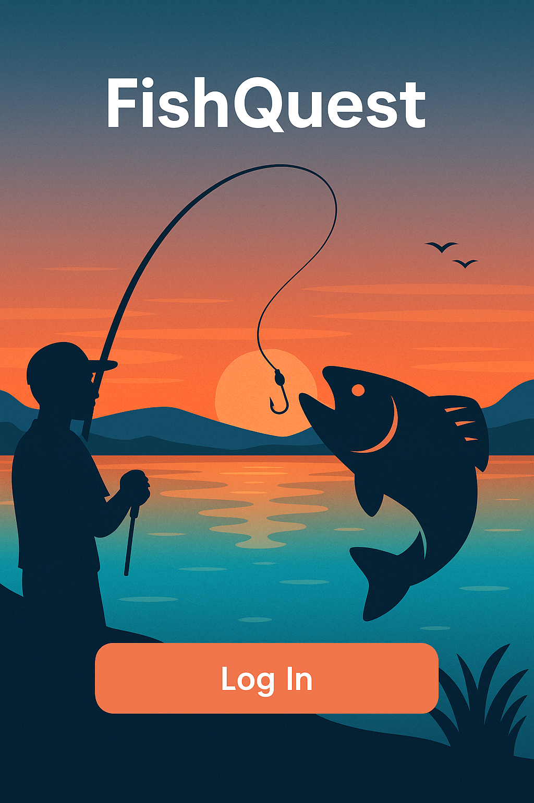
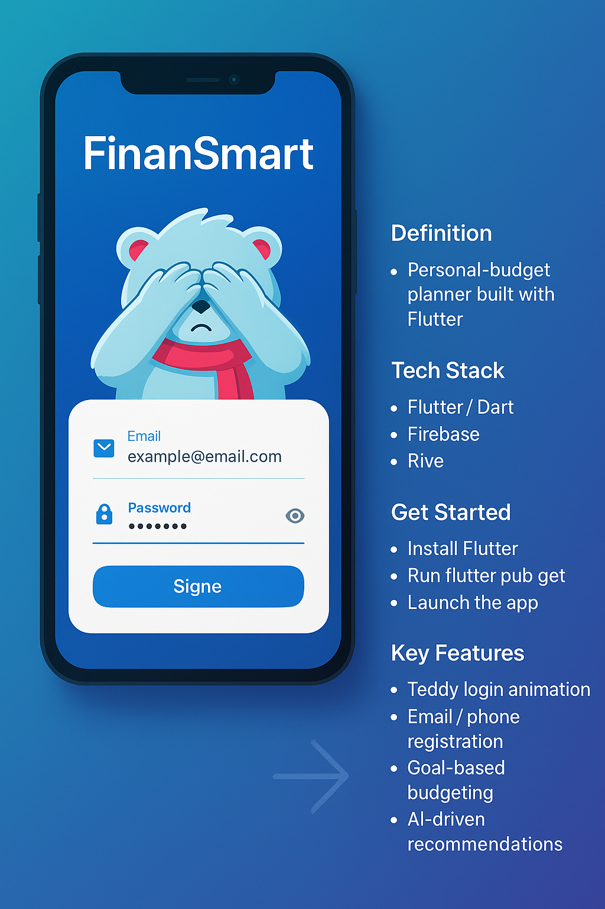
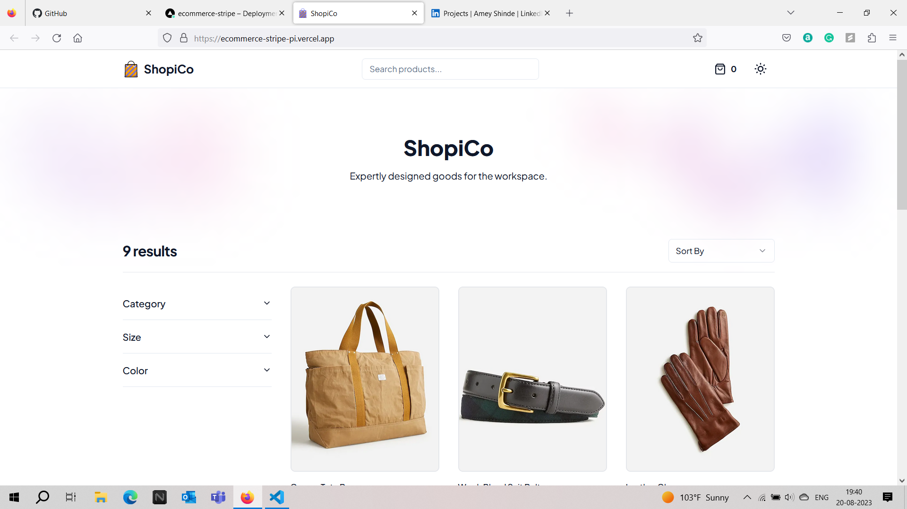
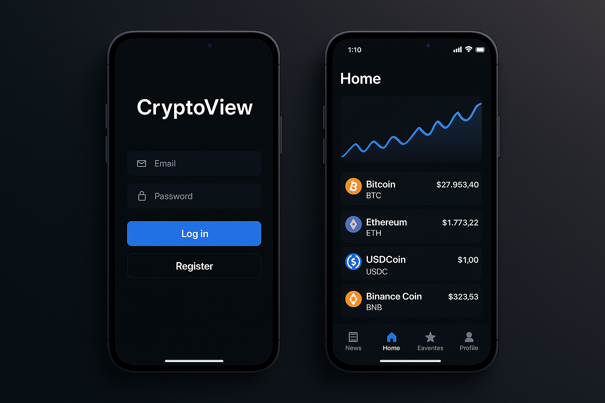
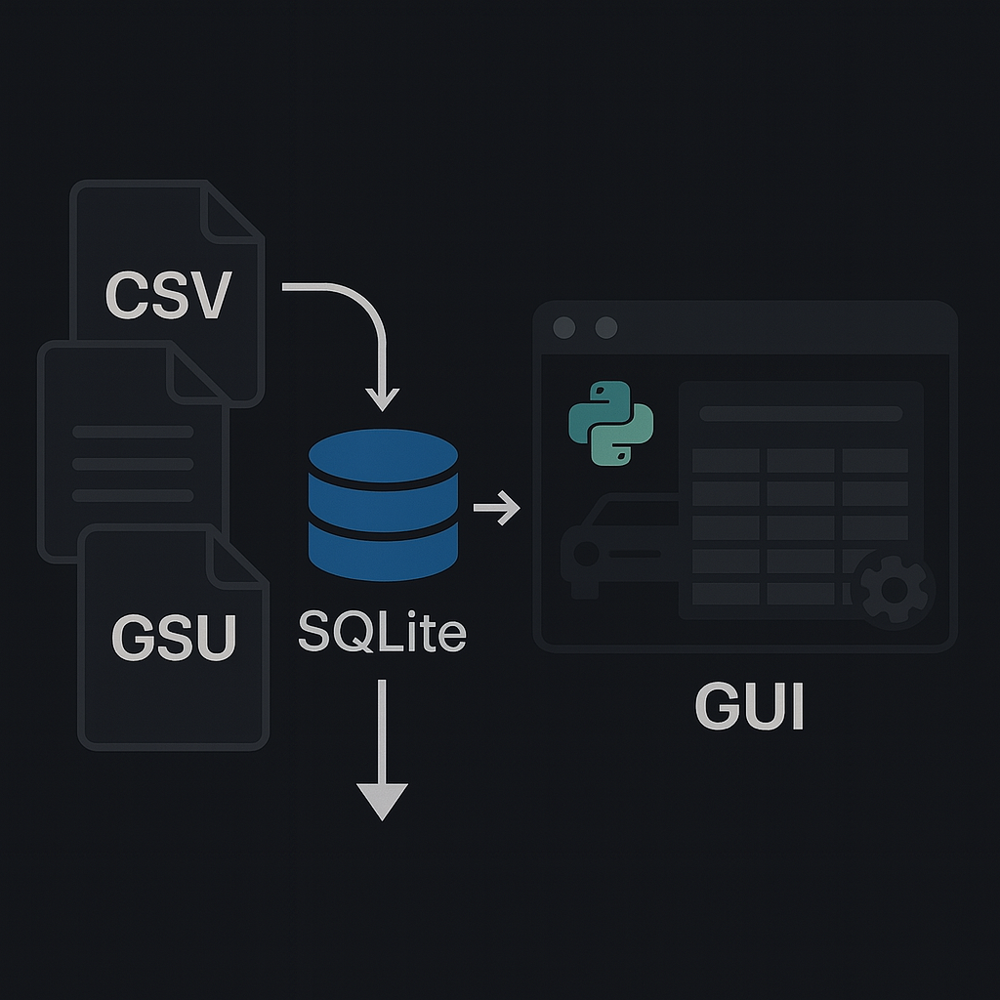
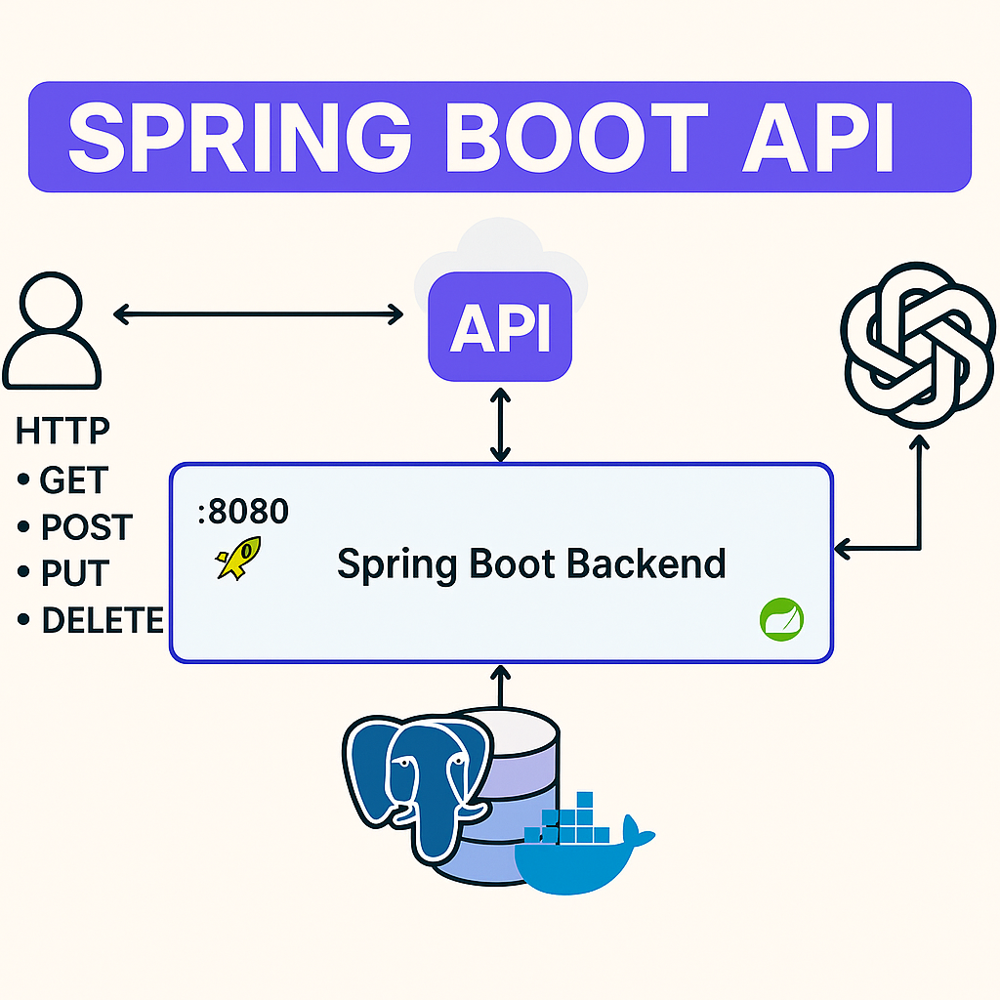
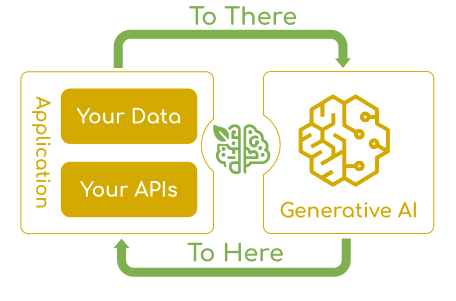
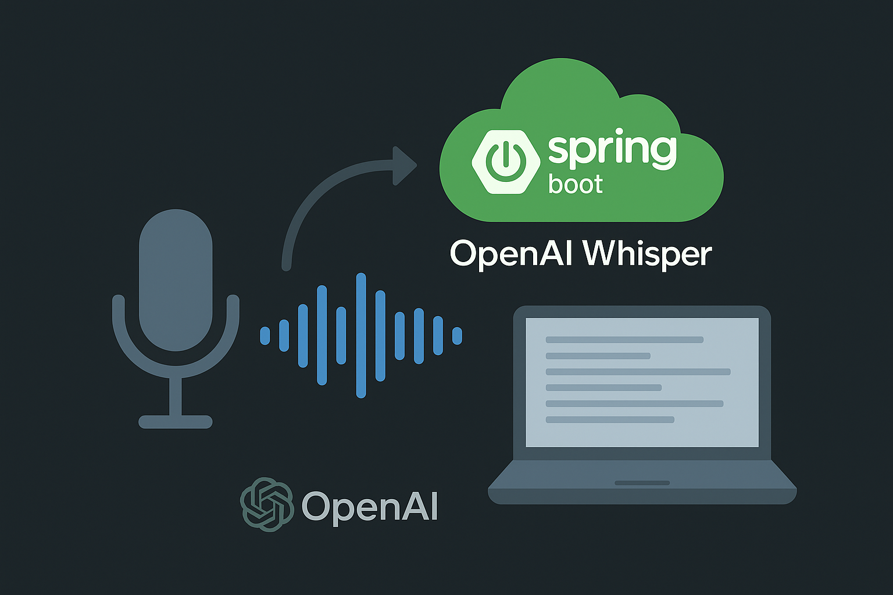

🧑💼
Work Experience
Bridging data engineering and software craftsmanship to build secure micro-services. Delivering real-time data pipelines that turn vision into scalable products.
🏁 F1 Grand Prix Winner Prediction is a machine learning application designed to predict the
winner of Formula 1 Grand Prix races by analyzing comprehensive race telemetry and performance
data using the FastF1 API (2024 season).
📅 The project includes predictions for all 24 races in the 2025 F1 calendar.
Each race is processed individually using updated driver, team, and track data prior to race weekend.
📊 Results and predictions are available and continually updated in the GitHub repository.
You can
follow along the season to track model accuracy and winner forecasts.

🔍 Key Features:
- 🧠 Qualifying Session Times: Performance across Q1, Q2, and Q3.
- 🛞 Clean Air Race Space: Evaluates aerodynamic advantage and passing potential.
- 🏎️ Team & Driver Performance: Seasonal metrics including consistency and tire strategy.
- 🌍 Circuit Characteristics: DRS zones, track layout, and overtaking difficulty.
- 🌡️ Weather & Track Conditions: Dry vs. wet conditions and temperature impact.
- 🧪 Race Strategy & Pit Stops: Effect of early or late stops on final position.
📈 Model Evaluation:
- 📉 Mean Absolute Error (MAE)
- 🧮 Root Mean Squared Error (RMSE)
- 📊 K-Fold Cross-Validation to ensure model generalization across circuits
This project demonstrates how real-time motorsport data can be transformed into accurate
insights using machine learning—offering powerful forecasting tools for analysts, F1 fans, and strategists.

FishQuest is a next-gen mobile app built for anglers, blending modern social media
experiences with powerful AI tools. Unlike other fishing apps, FishQuest offers a complete platform
where users can log catches, explore fish hotspots, and share their fishing journeys
within a vibrant community.
A core feature of FishQuest is its ML-powered fish recognition engine trained on a large dataset
of images to differentiate between species—even when photographed underwater versus above water.
This precision allows users to showcase their catches more accurately and confidently.
The app integrates a Snapchat-inspired camera interface to quickly snap catches and post them.
Our dynamic interactive map takes cues from Snapchat's map for real-time discovery, while the
sharing experience echoes Instagram’s “Featured” pages—focusing purely on fishing content.
We also added snap-streak–inspired missions and reward points to keep users coming back and leveling up
their angler profiles.
🎯 Key Features:
- 🗺️ Smart Species-Based Map: Locate fishing hotspots based on fish type, weather, and area.
- 📸 Snap-to-Catch: Quickly capture your catch using a Snapchat-style interface and post it in seconds.
- 🔍 AI Catch Recognition: Identify fish species and estimate weight via ML—underwater or above.
- 📢 Fishing-Only Social Feed: Like, comment, and share within a focused angler community.
- 🏆 Missions & Points: Streak-based rewards and quests to make fishing competitive and fun.
🛠️ Technologies Used:
- React Native (Mobile App Framework)
- AWS (EC2, S3, Cognito)
- Node.js + NestJS (Backend APIs)
- PostgreSQL (Relational Database)
- Custom-trained Machine Learning Model for fish identification
📈 Impact:
- +50% user engagement with gamified mapping & camera capture
- +20% social activity growth through niche community sharing
- +15% improvement in fish recognition accuracy (underwater images)

FinanSmart is a cross-platform personal-budget planner built in
Flutter. It blends a playful Teddy login animation with a
data-driven AI/ML engine that tracks spending, identifies savings
opportunities, and allocates your cash toward customised goals – all backed
by a lightweight Java/C# API for future expansion into enterprise stacks.
🔑 Key Features:
- Teddy Login: animated bear covers its eyes while you type your password.
- Email / phone registration with Firebase Auth.
- Goal-based budgeting – set savings targets and deadlines.
- AI-driven recommendations that re-classify spending and suggest cuts.
- Smart allocation algorithm distributes income to the most relevant goals.
- Insight dashboard – charts of savings rate, debt reduction, and net worth.
🧰 Technologies Used:
- Flutter / Dart 3
- Rive (Teddy animation) • Flare legacy support
- Firebase (Auth · Firestore · Cloud Functions)
- Python + TensorFlow Lite (client-side inference)
- Java 21 | C# 8 micro-service API stubs
- GitHub Actions CI · VS Code · Android Studio
🚀 How to Get Started:
- Clone the repo:
git clone https://github.com/MohammedAhmedZakiuddin/FinanSmart
- Install Flutter & run
flutter pub get
- Copy
google-services.json / GoogleService-Info.plist from your Firebase project
- Launch an emulator or plug in a device
- Run
flutter run and watch Teddy come alive 🐻

ShopiCo is a modern, responsive e-commerce platform built using TypeScript,
Next.js, and Sanity CMS, with full Stripe payment integration.
The app allows users to browse curated product listings, filter by categories, and securely purchase items
using dynamic checkout functionality.
Products are fetched from Sanity's headless CMS and rendered on the frontend with optimized image loading
and SSR via Next.js. Stripe handles real-time checkout sessions with full cart handling, success/failure
flows, and secure payment gateways.

CryptoView is a native Android app that helps investors follow hundreds
of cryptocurrencies, curate a personal watch-list, and stay on top of market news —
all in one streamlined interface.
🔑 Key Features:
- Dynamic coin feed: Home screen auto-loads live prices for 100+ coins.
- Favorites list: Tap the ⭐ to pin coins you care about.
- Search everywhere: Instant filtering on Home, Favorites, and News.
- Integrated news feed: Read the latest crypto headlines in-app.
- Secure auth: Register / Login flow with password reset via email.
- Bottom-nav UX: Four quick tabs — Home, News, Favorites, Profile.
🧰 Technologies Used:
- Android Studio Chipmunk (API 33 emulator)
- Kotlin 1.8 / Jetpack Compose (or XML layouts if legacy)
- REST API for crypto prices (CoinGecko / CoinMarketCap)
- Firebase Auth & Firestore (user accounts + favorites)
- Retrofit · Coroutines · LiveData / Flow
- Material 3 design components
- Git & GitHub
🚀 How to Get Started:
-
Clone the repo →
git clone -
github.com/MohammedAhmedZakiuddin/CryptoView.git
- Open the project in
Android Studio Chipmunk 2021.2.
- Install / launch the
Pixel 5 API 33 emulator (or any real device).
- Press
Run ▸ ; Gradle will build and deploy the app.
- Create an account or log in to explore coins, news, and favorites.

RentalXpress is a lightweight car-rental database demo that ships with CSV seed data,
an SQLite 3 schema, and a Tkinter GUI written in Python.
Import the data, fire up gui.py, and you’ve got a fully functional desktop app
for managing customers, vehicles, rates, and rentals—perfect for learning SQL + Python GUI basics.
🔑 Key Features:
- Relational schema ready: CUSTOMER, VEHICLE, RATE, and RENTAL tables with sample data.
- One-file database: Uses
CarRental2019.db – no server to install.
- Python GUI: Tkinter front-end for browsing & editing records.
- CSV import scripts: Quick commands to load the provided datasets.
- Clear install docs: Step-by-step SQLite and Python launch instructions.
🧰 Technologies Used:
- Python 3.10 (Tkinter GUI)
- SQLite 3
- CSV seed files
- Visual Studio Code / Notepad++
- Terminal / Command Prompt
🚀 How to Get Started:
- Clone the repo →
git clone -
github.com/MohammedAhmedZakiuddin/RentalXpress.git
- Import CSVs into SQLite:
sqlite3
.open CarRental2019.db
.headers on | .mode csv
.import CUSTOMER.csv CUSTOMER
.import RATE.csv RATE
.import RENTAL.csv RENTAL
.import VEHICLE.csv VEHICLE
.schema # verify tables
- Check Python version →
python --version (3.10+ recommended)
- Launch the GUI →
python gui.py
- Browse, add, or edit car-rental records via the Tkinter window.

Build scalable Java-based backend applications with this Spring Boot project, designed to demonstrate modern RESTful API development using industry-standard tools and frameworks. The application features database integration, service layers, containerized environments, and clean architecture principles — ideal for real-world deployment and professional use.
🔑 Key Features:
- Develop and expose REST APIs using Spring Boot and Spring MVC.
- Implement database interactions with Spring Data JPA.
- Set up and manage PostgreSQL with Docker and Docker Compose.
- Follow a layered architecture: Controller, Service, Repository.
- Perform CRUD operations with proper exception handling and validation.
- Externalized configuration via
application.properties
🧰 Technologies Used:
- Java 21
- Spring Boot
- Spring Data JPA
- PostgreSQL
- Docker & Docker Compose
- Maven
- IntelliJ IDEA
🚀 How to Get Started:
- Clone the repository and open it in IntelliJ IDEA.
- Ensure JDK 21 and Maven are installed.
- Start PostgreSQL using
docker-compose up
- Configure database credentials in
application.properties
- Run the Spring Boot application.
- Test the endpoints using Postman or IntelliJ HTTP client.

Leverage the power of OpenAI and modern Spring Boot frameworks in this interactive full-stack project that features AI-powered chat, image generation, and recipe creation. Built using Spring AI and React, this application demonstrates scalable backend design, modular UI components, and clean API integration — ideal for real-world deployment and developer learning.
🔑 Key Features:
- Image Generator: Generate AI-powered images using DALL·E from natural language prompts.
- Ask AI: Chat with OpenAI's language model using Spring AI integration via REST.
- Recipe Generator: Create recipes dynamically based on ingredients and dietary preferences.
- Built with a layered architecture (Controller → Service → Configuration).
- Parameterize model behavior with temperature, max tokens, and top-p settings.
- CORS handling, exception management, and validation included for production-ready setup.
- ReactJS frontend with separate views for each AI functionality.
- Frontend and backend are decoupled and deployed independently.
🧰 Technologies Used:
- Java 21
- Spring Boot
- Spring AI (OpenAI Integration)
- Spring MVC
- ReactJS
- OpenAI APIs (Chat, Image, Transcription)
- Docker & Docker Compose
- Postman
- IntelliJ IDEA & VS Code
🚀 How to Get Started:
- Clone the project repository from GitHub.
- Open the backend in
IntelliJ IDEA and the frontend in VS Code
- Ensure
JDK 21, Node.js, and Maven are installed.
- Generate your
OpenAI API key and configure it in application.properties or environment variables.
- Run the backend with
mvn spring-boot:run and the frontend using npm start
- Access the app through the React interface or test endpoints using Postman.

Harness the power of OpenAI Whisper and modern Spring Boot to convert any audio file—or live mic
stream—into clean, timestamped text in seconds. This full-stack app shows off scalable backend design,
modular React components, and a production-ready API layer that’s perfect for podcasts, lectures, and meetings.
🔑 Key Features:
- Multi-language transcription: Auto-detects language and outputs Unicode-clean text.
- Timestamps & speaker breaks: Paragraph splits on silence; optional SRT/VTT export.
- Live progress streaming: Server-Sent Events feed partial results to the UI in real time.
- Summary mode: GPT post-processor creates concise bullet summaries on demand.
- Layered architecture (Controller → Service → Config) for easy extension.
- Secure key handling: OPENAI_API_KEY lives in env vars—never exposed client-side.
- Production hardening: Global CORS, exception advice, and Bean Validation.
- Decoupled React UI: Any SPA or mobile client can consume the REST API.
🧰 Technologies Used:
- Java 21
- Spring Boot 3 + Spring AI (Whisper & GPT)
- Spring MVC / WebFlux
- React 18 + Vite + Tailwind CSS
- PostgreSQL 15 & Flyway
- MinIO (S3-compatible object storage)
- Docker & Docker Compose
- Postman
- IntelliJ IDEA & VS Code
🚀 How to Get Started:
- Clone the project repository from GitHub.
- Open the backend in
IntelliJ IDEA and the frontend in VS Code.
- Ensure
JDK 21, Node.js ≥ 18, Maven, and Docker are installed.
- Copy
.env.sample → .env and set OPENAI_API_KEY.
- Run backing services with
docker compose up -d.
- Start the backend via
mvn spring-boot:run and the frontend with npm start.
- Drag a WAV/MP3 into the React UI or hit
/api/v1/transcribe using Postman.